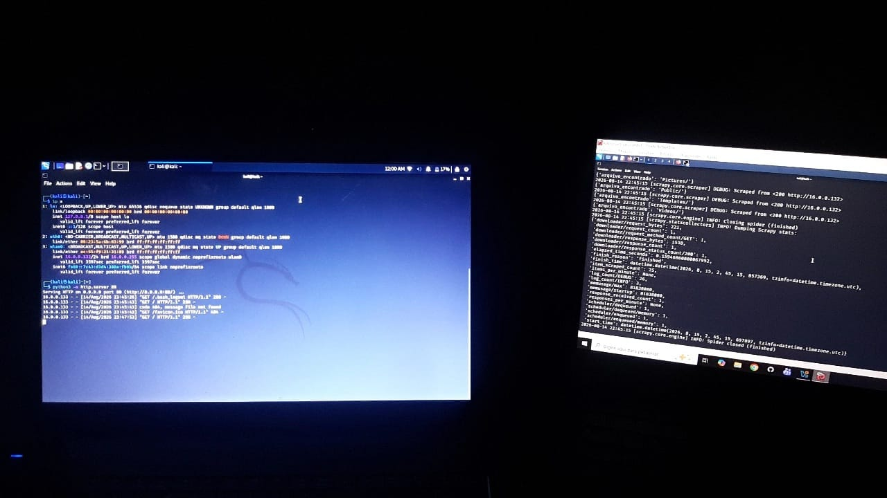
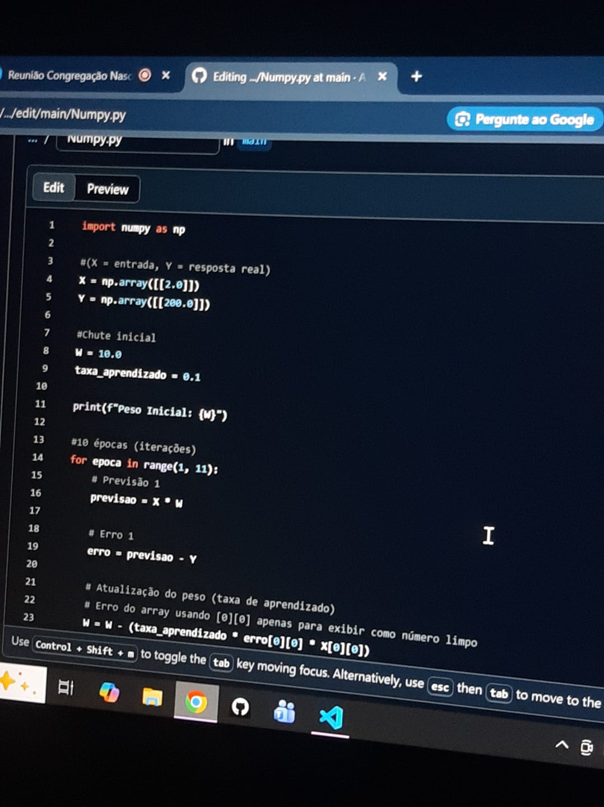

Em 2020 comecei a estudar segurança de informações, essa que virou minha paixão. Nesses 6 anos, fiz alguns laboratórios, tive experiência com profissionais da área e aproveitei muito o tempo que tive. Em 2025, ao terminar meu curso técnico, decidi focar concretamente nessa paixão pelo lado ofensivo da cibersegurança.
Essa é a etapa de Scraping, ou coleta de informações, ao se preparar para um ataque ofensivo.

Juntamente com segurança, meu foco atual é IA, como Cientista de Dados. Cálculos, matemática, álgebra e tudo que faz parte do universo das Inteligências Artificiais.
Acima temos um código que fiz com base no aprendizado de um neurônio até que ele chegue no resultado mais próximo do ideal.

Já idealizei e comecei a projetar uma automação (com placas antigas de motores de portão) para estacionamento, porém dei uma pausa para focar na faculdade.
Programo em Python e em C/C++ também.